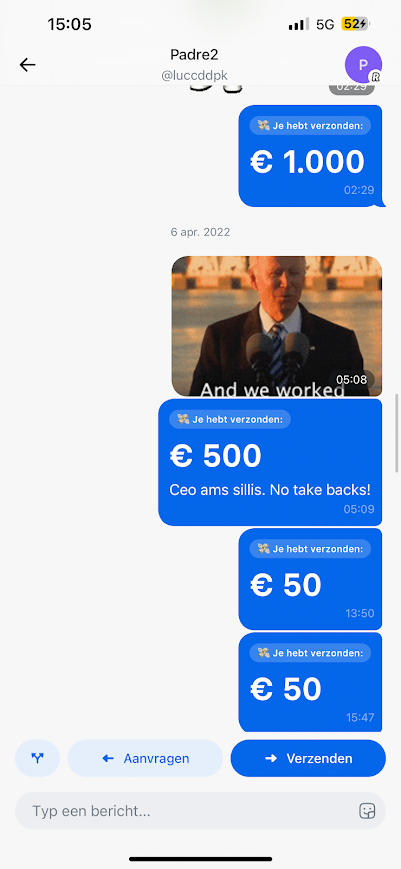
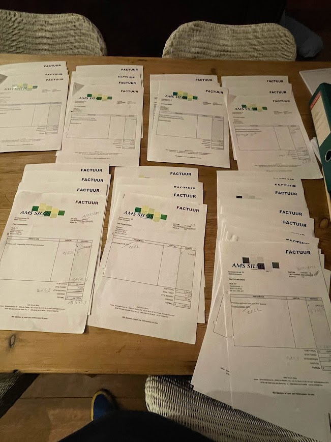
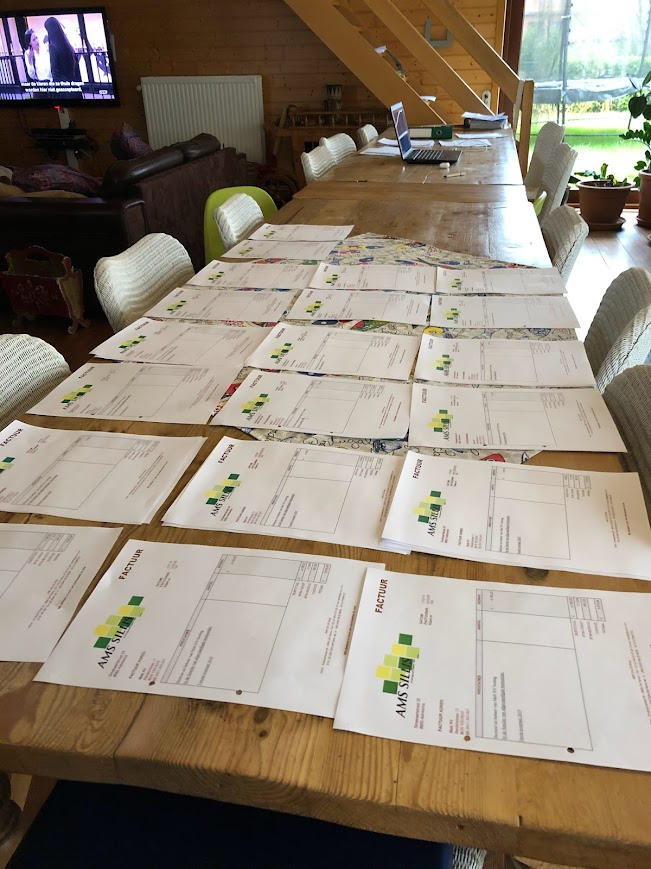
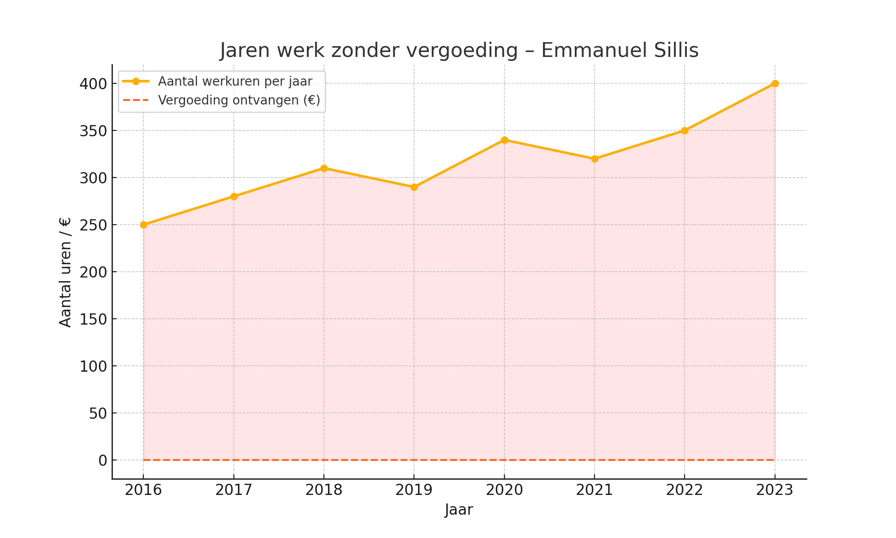

Chat met Luc – CEO AMS Sillis
Transactie met vermelding “CEO AMS SILLIS” als bewijs van onderlinge samenwerking.
Voorbeeldfacturen – Door Emmanuel opgesteld
Alle documenten werden door Emmanuel ontworpen, opgesteld en verwerkt.
 Jaren werk zonder vergoeding – Visualisatie
Meer dan 250 uur per jaar, zonder financiële erkenning.
